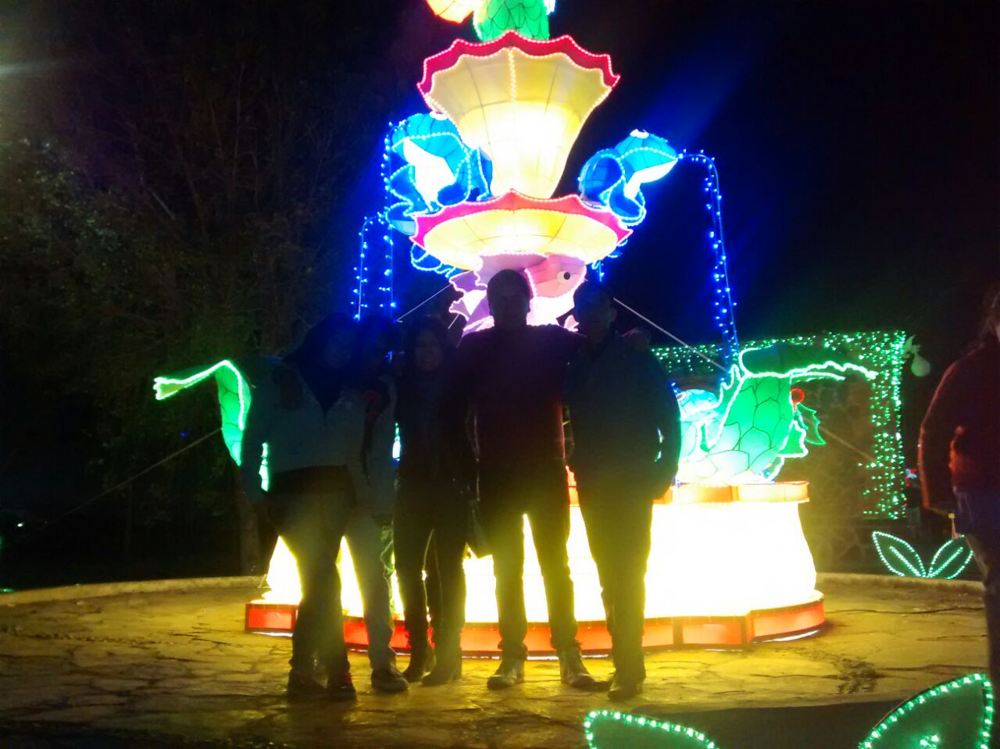

Villa Iluminada Atlixco
Introducción
- La no che de este Martes, ante ,miles de familias y un espectáculo de pirotecnia, el Alcalde de Atlixco, José Luis Galeazzi Berra, inauguró la Curta Edición de la Villa Iluminada, que concluira el próximo 6 de Enero de 2015. En esta ocacion, a través de 3 mil figuras nuevas y durante 43 dias, todos los visitantes podrán disfrutar de la belleza arquitectónica de la ciudad de Atlixco, que se embellece con luces cooridas de variantes tonos y escenas alusivas a la época decembrina y la identidad atlixquense.
Posterior al encendido, hubo un espectáculo de nieve en la calle Constitución, que miles de pequeños, con sus familias, disfrutaron al máximo.nVilla Iluminada espera la llegada de entre 450 a 500 mil visitantes, lo cual permitirá tener una derrama económica de 55 a 60 millones de pesos, pues habrá poco mas de 100 eventos culturales y artisticos, con la participación de 30 grupos provenientes de países como Guatemala, España, Colombia, Perú, Irlanda, Libia, Chile, Kenia e Italia, asi como de México y la región.

